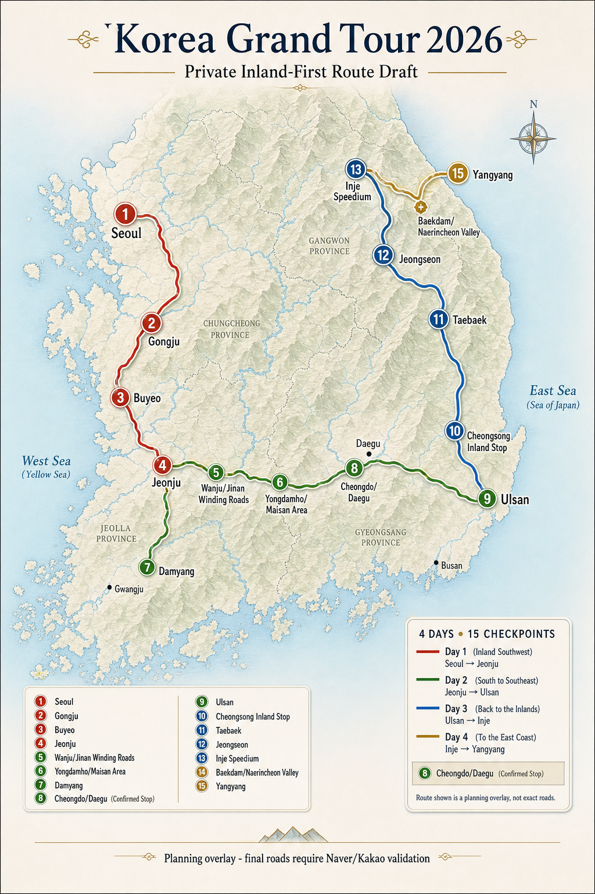

KGT 2026 Mapped Itinerary
A visual planning board for the Hidden Premium route. Kakao route estimates support distance and duration checks; Kakao links support live place checks.
Validation warning: Kakao distances and durations use checkpoint coordinates with RECOMMEND routing. Exact roads, parking lots, closures, hotel blocks, restaurant capacity, and convoy arrival/departure flows still require final map checks and direct calls before roadbook release.

Generated planning image: Gongju replaces Asan; Cheongdo/Daegu is locked; Day 3 returns inland through Cheongsong, Taebaek, Jeongseon, and Inje.
Kakao Checkpoint Map
Loaded from local KGT map bridge when available
Loading Kakao map bridge...
Route Shape
Planning overlay with Kakao place links
D1
D2
D3
D4
Markers open map searches in a new tab. Route metrics are live Kakao Navi checkpoint estimates; overlay lines are still planning geometry, not final roadbook navigation.